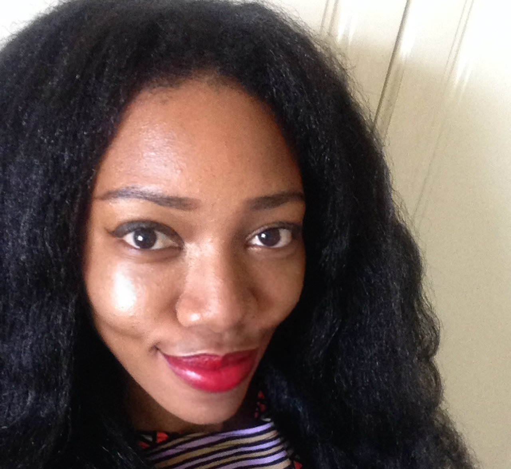
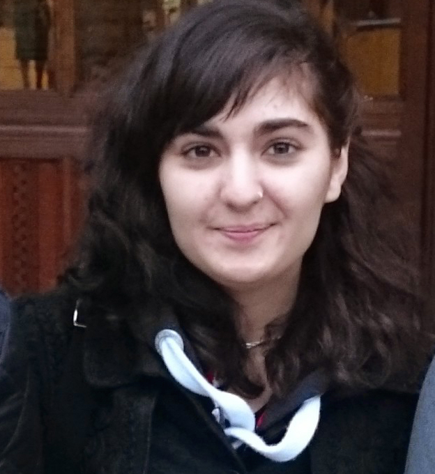

About Us
Antonia Anni
Antonia is the mastermind behind the whole event. As a strong advocate for women in technology, Antonia wanted to create a space for minorities.
By learning herself how to code, she can create a community for others to help them take their first steps into the industry.
A UX consultant by day, Antonia also runs the Platforms For Women twitter account.

Elizabeth Chesters
Elizabeth was invited to co-found the group after a tweet complimenting Codecademy's user experience. After that initial tweet, she set up the Twitter account and bagged our first venue.
Elizabeth also mentors on behalf of CodeFirst:Girls. She's also run a CodeClub and volunteered as a STEMNet Ambassador, including TeenTech.
